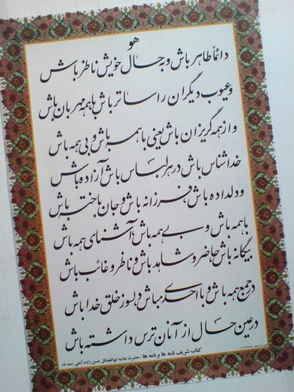
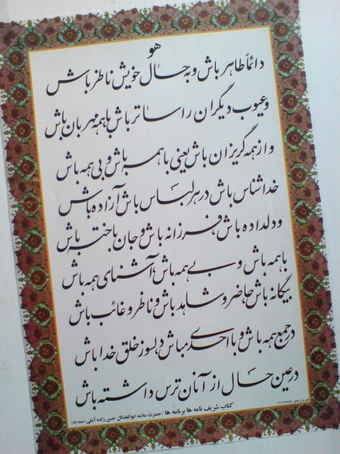

بسم الله الرحمن الرحیم
به اطلاع می رساند
مجموعه فرهنگی رسانه ای (نشر دیجیتال بر خط) شِهَابٌ ثَاقِبٌ در زمینه پژوهش و تحقیق در حکمت متعالیه و عرفان
اسلامی با مبانی معرفت نفس و خودشناسی طبق برنامه مسیر خودشناسی، کتب و آثار علامه ذوالفنون حسن زاده آملی
فعالیت می نماید.
اهداف یا همان دلایل وجوب جهاد فرهنگی مجموعه فرهنگی رسانه ای شامل موارد ذیل میباشد:
- ۱. تحقق جامعه ای قرآنی ولایی یا همان مدینه فاضله حتی در سطح خانواده ها، با تولید محتوای فرهنگی، مذهبی، دیجیتالی و رسانه ای بر اساس مسیر علمی معرفت نفس و آثار و کتب علامه حسن زاده آملی.
- ۲. ایجاد شرایط مطلوب فرهنگی جهت خودشناسی و خودسازی اعضاء در مسیر علمی و عملی آثار حکمی و فلسفی.
- ۳. بستر سازی جهت تحقق عملی اجرای اوامر ولی فقیه مقام معظم رهبری امام خامنه ای (ارواحنا له الفداه) با توجه به تولید محتوای سبک زندگی اسلامی.
- ۴. اشاعه و ترویج گسترده مسیر علم و عمل در خودسازی و تهذیب نفس و طهارت باطنی.
- ۵. مقابله قدرتمندانه با برنامه های دشمنان دین و انسانیت در تمام شئون زندگی و ختم قتل عام فرهنگی جوانان عزیز.
- ۶. معرفی مذهب حقه جعفری در بخش عملی و کاربردی زندگی به سایر ملل و مذاهب توسط ابزار رسانه.
- ۷. الگو سازی برای سایر تجمّعها و ملل گوناگون اجتماعی.
- ۸. جذب بیشتر جوانان با ایجاد شرایط مناسب اقتصادی و شغلی، و تبیین فرهنگ صحیح کار و تلاش برای آنان با توجه به مبانی فرهنگی.
- ۹. احیای سنتهای اصیل شیعی ایرانی که در سطح فردی عمل به آنها بسیار مشکل است مانند تغذیه سالم، تربیت اصیل شیعی فرزندان، معماری اسلامی، ورزش مناسب و ...
- ۱۰. حل مشکلات عدیده اقتصادی اعضاء و جایگزینی وامهای ربوی رایج در سطح اجتماع توسط وامهای صددرصد قرض الحسنه.
- ۱۱. نمایاندن چهره ای جذاب و تمام بعدی از دین و مذهب عزیزمان شیعه حقه جعفری به پیروان سایر ادیان و مذاهب.
- ۱۲. تقویت رشد علمی، فرهنگی و اقتصادی کشور با توجه به معرفی راهکارهای عملی.
- ۱۳. ایجاد فضاهای مناسب آموزشی و تفریحی کاملا مطابق با آموزه های دینی جهت رشد انسانی کودکان و نونهالان عزیز.
- ۱۴. تشکیل خیریّه ای مولد و کارآمد که علاوه بر نیازهای مادی، پاسخگوی نیازهای معنوی نیز باشد.
- ۱۵. تحقق فضایی که معرّف جایگاه واقعی زن شیعی در اجتماع باشد.
- ۱۶. احیای علوم اصیل و کاربردی اسلامی که امروزه در مراکز علمی جایگاهی ندارند.
- ۱۷. تسهیل شرایط ازدواج جوانان و اعمال سنتهای نیک و پسندیده اسلامی و مقابله با عادتهای غلط اجتماعی در این بخش.
- ۱۸. تحول فکری، علمی و عملی در بخش کشاورزی بعنوان زیر بنایی ترین بستر اقتصاد. (آموزش استفاده بهینه از منابع آب، خاک، هوا و انرژی و پاکسازی آنها)
- ۱۹. الگو سازی و ارائه نمونه ای زنده و پویا از محور تفکر شیعه که همان رشد تمام بعدی انسان می باشد. (همانند زندگی علامه حسن زاده آملی)
 
